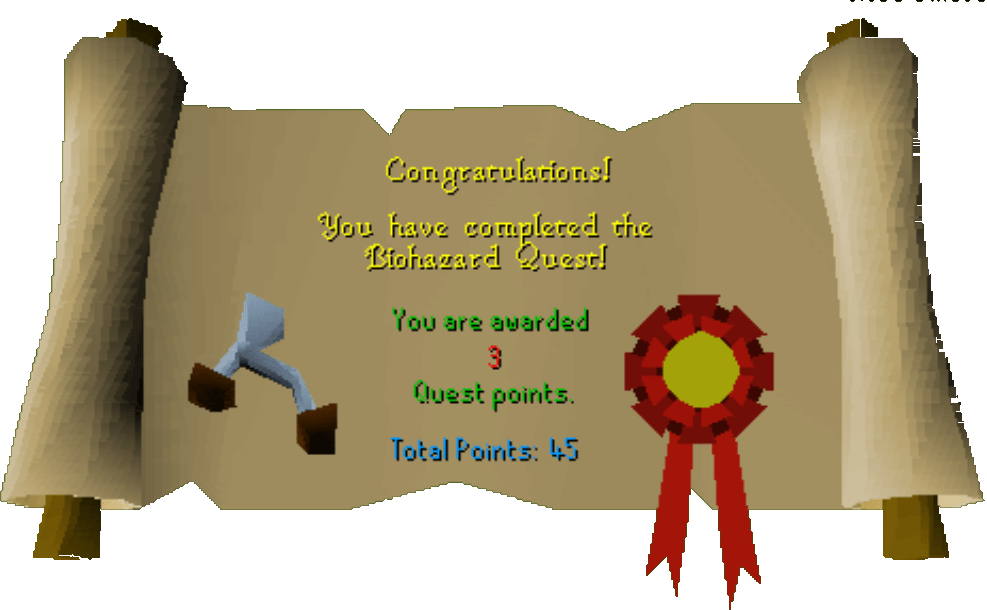

Biohazard
Description: Second part of an ongoing adventure. Help Elena discover the truth about the infamous ardounge plague. Smuggle test samples across ardounge to Elena's old mentor.Difficulty: Novice
Length: Long
Required Quests:
- Plague City
Items & Skills Needed:
- Coins 5
- Priest gown
- Priest robe
Reward: 3 Quest points, 1,250 Thieving XP, the ability to use King Lathas' training field
Instructions:
Talk to Elena; she will say that her distillator has been stolen by the Mourner, and the tunnel is blocked. Accept the quest, and she will tell you to find a man called Jerico.
Jerico is located in the house south of the western bank in East Ardougne (The house with the pigeon cages in the backyard). After you have found him, talk to him, and he will ask you to find Omart. Before you leave, pick up one Pigeon Cage and search his cupboards to find some bird feed.
Omart is located in the southwest of West Ardougne, west of the Carnilleans' house. After you have found him, talk to him, and he will say everything is ready, but you and Omart can't risk it with the watchtower so close. He will say that you should go back and talk to Jerico again. You can, but if you don't want to waste time, DON'T.
Remember that you took a Pigeon Cage and some bird feed? Go to the watchtower, which is located north of Omart, and use the bird feed on the watchtower. Then open the pigeon cage. The mourners will focus on the pigeons now, not you. Talk to Omart and you will be in West Ardougne.
Go to the northeast building in West Ardougne. Take a rotten apple, which is just a little northwest of the house. Climb over the fence and use the rotten apple on the cauldron. Try to open the door, and a mourner will say that some mourners are ill and they need a doctor.
Now it's your time to be a doctor. Head southwest and find a house that Nurse Sarah is inside. Go in and search the cupboard. You will find a doctor's gown. Put it on and go back to the house.
Open the door in front of the mourner's house. The mourners will let you in. Open the door in the house and climb up the staircase. Open the door and tell the mourner whatever you like. He will attack you. Kill him and do the same to the other mourner. After you have killed both mourners, you should get a key. Use it on the gate to open it. Search all the crates until you find the distillator. Get out of the house.
Go to the southeast part of the city. Talk to Kilron and tell him that you want to go back.
When you reach West Ardougne, go to Elena's house and talk to her. She will give you some filled vials. She will also ask you to get some touch paper from the chemist, use the chemist's children to smuggle the vials to Varrock, collect some samples, and take them to Guidor in Varrock. DON'T TELEPORT OR THE VIALS WILL BREAK, although you can put the vials in your bank, then teleport.
The chemist is located just west of Rimmington. After you reach there, talk to the chemist; just say you are Elena's friend. DO NOT SAY ANYTHING ABOUT PLAGUE. Say that you need the touch paper for Guidor. He will give you the paper.
Now it's time to give the vials to the three children. Give Hops the Sulphuric Broline, Chancy the honey, and DeVinci the Ethena. They will say that they will meet you in the Dancing Donkey Inn.
The Dancing Donkey Inn is located in the southeast of Varrock. Before you reach there, a guard should search you. That's why you need the children to smuggle the vials. Talk to the children in the Dancing Donkey Inn to get back the vials.
Guidor's house is just southeast of the inn. Talk to his wife; she will say that she needs a priest. If you have the priest robes and gown here, put them on and talk to his wife again. She will allow you to go in. (If you do not have the priest robes and gown, a set can be purchased from the Fancy dress shop to the north for 12gp)
Now it is time to realize the truth. Talk to Guidor and tell him you're here because of Elena. Give all the vials to him, and he will tell you that there is no plague.
Go back to Elena's house and tell her there is no plague. She will tell you to see the King of Ardougne.
The king is on the 2nd floor of the palace in Ardougne. The palace is located in the southwest of Ardougne. Talk to King Lathas, and he will tell you about his brother, King Tyras, and reward you.
Congratulations, Quest Complete!

This quest guide was written on RuneHQ by henry-x. Thanks to Weezy, Shaw, stormer, bowman_1990, Eric2203, bmx 768, and Halfling_hopperston for corrections.
This quest guide was entered into the database on Mon, Feb 09, 2004, at 05:46:58 PM by Sand Scape and was last updated on Sun, May 23, 2004, at 07:27:03 PM.